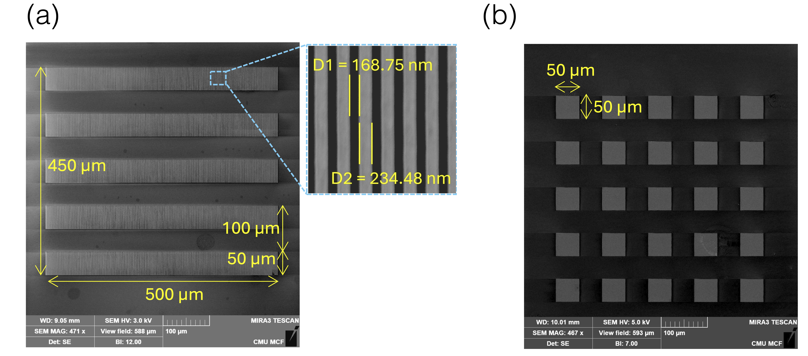

01 / Thermal metrologyFDTR · Nanofabrication · Modeling

Nanoline grating metrology
Designed and fabricated gold nanoline gratings and developed an analytical model that accounts for finite laser-spot effects. The method makes a range of phonon mean free paths accessible on thick substrates.
Read the research story ↗